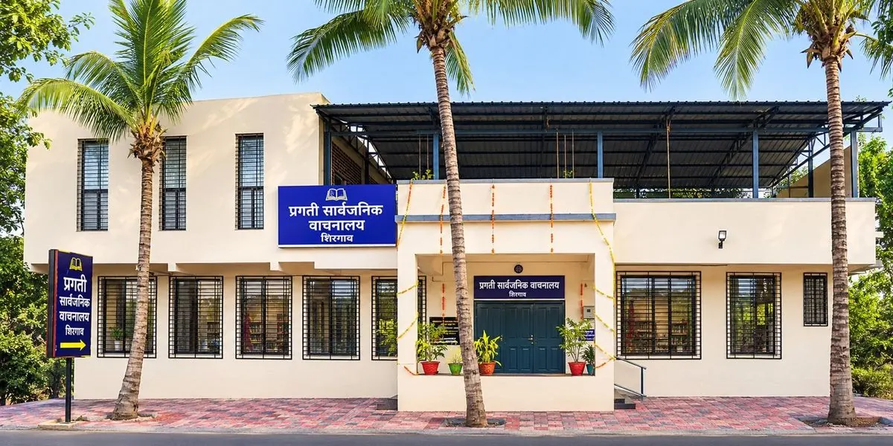
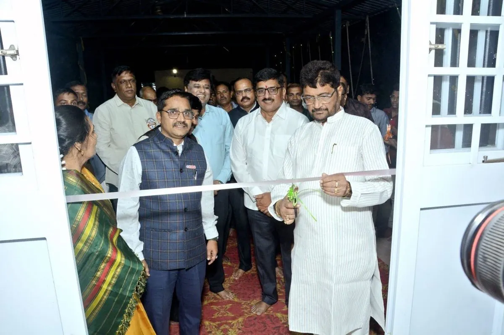

आजचा प्रश्न पाहण्यासाठी पान पुन्हा लोड करा.
उत्तर पाहा
दररोज एक नवा प्रश्न. उत्तर आधी स्वतः आठवून पाहा!

आजचा प्रश्न पाहण्यासाठी पान पुन्हा लोड करा.
दररोज एक नवा प्रश्न. उत्तर आधी स्वतः आठवून पाहा!
मराठी व इंग्रजी बातम्या ऐकून भाषा सुधारा आणि सामान्यज्ञान वाढवा.
१४ नोव्हेंबर २००२ रोजी एका छोट्या खोलीत सुरू झालेले वाचनालय आज स्वतःच्या नव्या वास्तूत आहे — ग्रंथसंग्रह, अभ्यासिका, स्वतंत्र बालविभाग आणि ऑनलाइन शिक्षणाची सुविधा यांसह.
वर्धापनदिनाची छायाचित्रे पाहा
या महिन्यातील वाचनालयाचे उपक्रम. चित्र मोठे पाहण्यासाठी त्यावर क्लिक करा.
वाचन, चिंतन, संस्कार आणि चांगली संगत — हीच खरी प्रगती.
कथावाचन आणि आनंदाचा तास; वर्षातील सुमारे ४५ रविवारी उपक्रमांचा प्रस्ताव.
स्पर्धा परीक्षा, करिअर आणि तज्ज्ञांची ऑनलाइन व्याख्याने.
लोकसहभाग, देणग्या, CSR सहकार्य आणि सुविधांचा विस्तार.
हे उपक्रम प्रस्तावित आहेत; तारीख व वेळ निश्चित होताच वरील दिनदर्शिकेत जाहीर केली जाईल.